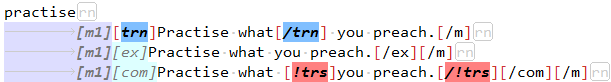

Поиск и индексирование в Lingvo
Поскольку язык DSL разрабатывался специалистами компании ABBYY специально для использования в программе Lingvo, некоторые особености работы программы тесно связаны, а, возможно, и повлияли на его устройство. Одной из таких особенностей является организация поиска слов по тексту словарей и, связанный с этим, процесс индексирования. Эта тема имеет непосредственное отношение к пониманию значений тэгов поисковой обработки [ex], [com], [trn] и [!trs].
Одним из основных и бесспорных преимуществ электронных словарей в сравнении с бумажными, является возможность быстрого (и по силам приближающегося к мгновенному) поиска по содержимому. Отметим, что речь при этом идёт как правило не об одном словаре, а о десятках, иногда даже о сотнях. И «скорость» при осуществлении данной задачи является фактором ключевым, но не единственным. Рассмотрим, как этот процесс организован в Lingvo.
При подключении к Lingvo нового словаря, программа автоматически запускает процесс индексирования. При этом составляется индекс, т.е., в общих чертах, сжатый полный список, перечень всех слов, входящих в словарь. Очевидно, что благодаря этому достигается скорость поиска по словарю, поскольку долгий анализ всего содержимого словаря выполняется единожды, при построении идекса, и впоследствии при поисковых запросах происходит обращение только к последнему. Индекс записывается в файлы *.trs и располагается в пользовательской папке ..\Application Data\Local\ABBYY\Lingvo\. При добавлении каждого нового словаря индекс пополняется и, соответственно, растёт размер его файлов. Ясно, что для того, чтобы размер не увеличивался напрасно, в индекс, при его создании, должны включаться только полезные данные, а бесполезные должны исключаться. Регулирование этого процесса организовано уже на уровне языка DSL.
При помощи некоторых тэгов в DSL размечаются зоны, которые обрабатываются или игнорируются программой при составлении индекса. По отношению к индексу эти тэги делятся на включающие и исключающие.
Исключающими являются тэги: прежде всего [!trs], и затем [p], [ref], <<···>>, [url], [s], [video]. Из перечисленных только у первого [!trs] исключение из индекса является основной и единственной функцией, а у остальных основные функции другие и с индексом не связаны.
Включающими являются тэги: [trn], [ex] и [com]. Кроме того в индекс в обязательном порядке попадают все словарные заголовки.
Принцип влияния упомянутых тэгов на операцию индексирования рассмотрим на простом примере. Создадим тестовый словарик из одной карточки:
В примере видим, что часть текста находится в зоне действия включающих тэгов [trn], [ex] и [com] – этот текст должен быть включен в состав индекса. Один фрагмент находится за пределами включающего тэга [trn], а другой обрамлен исключающим тэгом [!trs] – этот текст в индекс попасть не должен. Теперь проверим так ли это на практике. Делаем поисковый запрос по слову «гвоздь».
Как видим, результаты поиска распределены по категориям: заголовки, переводы, примеры и комментарии. Эти категории определяются включающими тэгами: [trn] – для переводов, [ex] – для примеров, [com] – для комментариев, а заголовки индексируются без дополнительной разметки. Искомое слово найдено во всех четырёх категориях – и в исходном DSL мы видим, что, действительно, это слово находится в области действия всех включающих тэгов. Теперь поищем слово «фуражка».

Как видим, слово нашлось только в категории примеров. Всё правильно: в заголовках его нет, в зону переводов [trn] оно не попало, а из зоны комментариев [com] мы его исключили при помощи тэга [!trs].
Итак, пример наглядно продемонстрировал нам следующее:
- В состав индекса включаются заголовки и текст, находящийся в зоне действия включающих тэгов.
- Каждый из включающих тэгов образует отдельную категорию в индексе.
- В состав индекса не попадает текст, находящийся за пределами зоны действия включающих тэгов, а также текст, занесённый в зону действия исключающих тэгов.
- Механизм поиска в программе находит только те слова, которые попали в состав индекса.
При помощи внимательной разметки текста тэгами мы добились того, что в индекс вошли только полезные данные, следовательно его объём стал максимально экономичным, а состав – максимально эффективным. Однако такая подготовка DSL словаря к использованию требует от составителя определённых технических навыков, поскольку нужно самостоятельно размечать тэгами текст, размер которого может быть далеко не маленьким. Причём, та часть текста, которая по какой-либо причине окажется неразмеченной, станет недоступна при поиске в программе. Эта задача по силам не всем пользователям. Для таких случаев в Lingvo предусмотрен другой способ разметки DSL для индексирования – автоматический. Как это происходит, мы рассмотрим на другом примере.
Создадим тестовый словарик, аналогичный предыдущему по строению, но, для наглядности, на английском языке.

Теперь отконвертируем этот словарик в формат LSD при помощи Компилятора DSL, предварительно включив опцию компилятора «Автоматически добавлять разметку, необходимую для поиска по содержимому карточек словаря». Полученный LSD откроем в hex-редакторе и посмотрим, что внутри.
Как видим, в начале и в конце статьи появились дескрипторы нового тэга, которого не было в исходном DSL (на снимке подчёркнуто пурпурными линиями). Это [trn1]···[/trn1] – недокументированный тэг, добавляемый компилятором при обработке словаря. Подобно своему родственнику [trn], он создаёт категорию переводов и включает в неё содержимое всей статьи от начала до конца. Таким образом для поиска в программе становится доступным полный текст всего словаря, кроме отрывков, попавших в исключающие тэги. Этот способ менее экономичен и аккуратен по сравнению с предыдущим, но зато не требует от составителя пользовательского словаря специальных технических знаний и навыков.